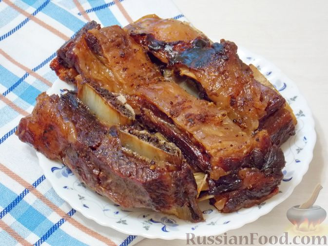

Домой
Говьжьи ребрышки в духовке

Описание
Кто бы мог подумать, что из говяжьих ребер, чеснока и аджики можно
приготовить изумительное мясное блюдо. Получится очень мягкое и вкусное
мясо, если запекать его в пергаменте в духовке дольше обычного при
небольшой температуре.
Ингридиенты
- Говяжьи рёбра - 1 кг
- Чеснок - 2 зубчика
- Аджика сухая - 1/2 ч. ложки
- Соль - 1/2 ч. ложки
- Масло растительное - 1 ст. ложка
Шаги
-
Подготовьте необходимые ингредиенты для приготовления запечённых
говяжьих ребер с чесноком и аджикой. Духовку нагрейте до температуры 150
градусов.
-
Чеснок очистите, натрите на мелкой тёрке. Добавьте аджику и перемешайте.
-
Говяжьи рёбра натрите со всех сторон чесноком с аджикой. Посолите.
Смажьте рёбра растительным маслом.
-
Плотно заверните говяжьи рёбра в пергаментную бумагу для выпечки.
Закрепите шпагатом. Уложите говяжьи рёбра в пергаменте на противень.
-
Запекайте говяжьи рёбра в духовке при температуре 150 градусов в течение
4 часов. Затем разрежьте бумагу и запекайте ещё 10 минут при более
высокой температуре до румяной корочки (по желанию).